Full-course environment pass: irregular conifers, fern undergrowth, rocky banks, mountain relief and damp volcano roads.
This is the generated target image, not gameplay.
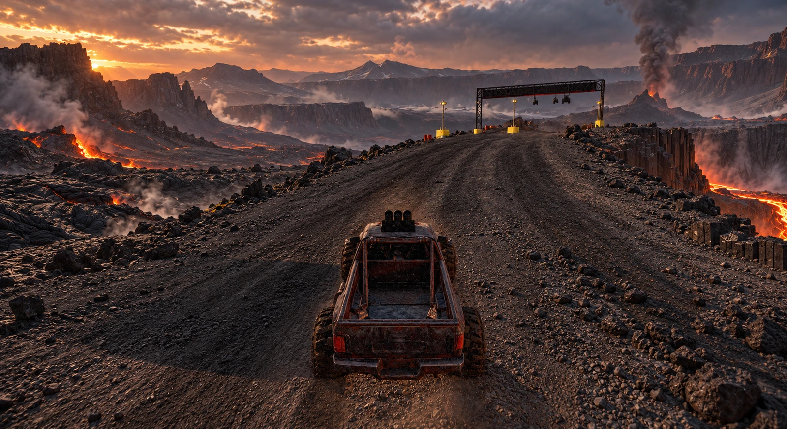
Fourteen High-quality driving-camera captures around the 2,000 m track. Existing road, jumps and racing route retained.
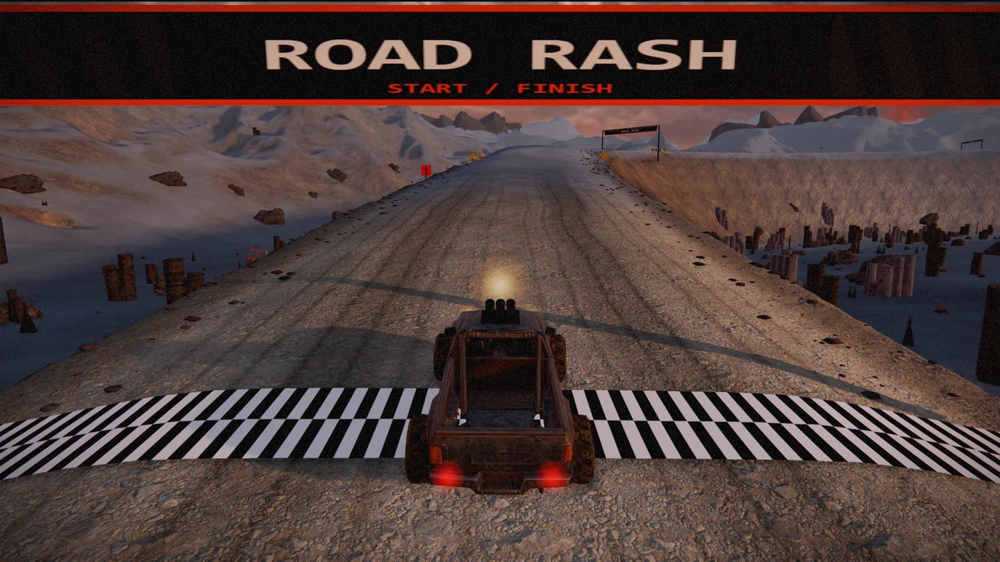
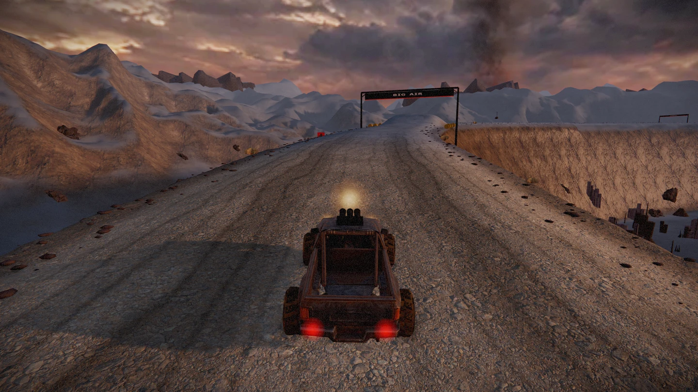
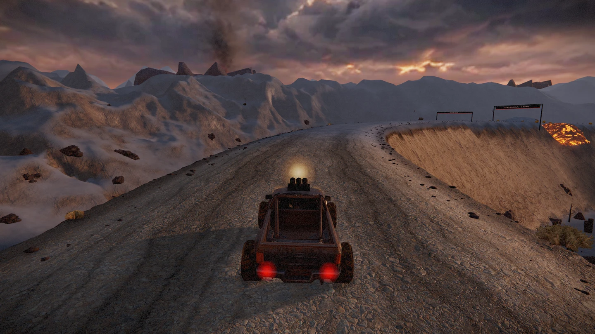
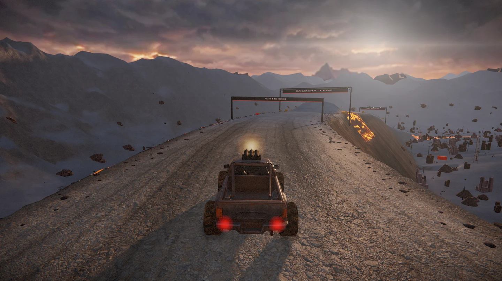
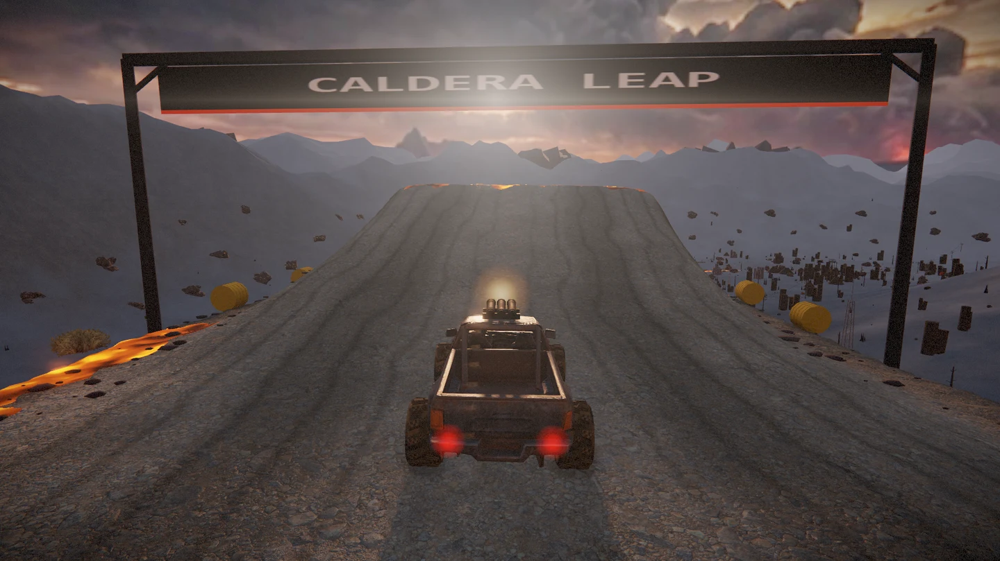
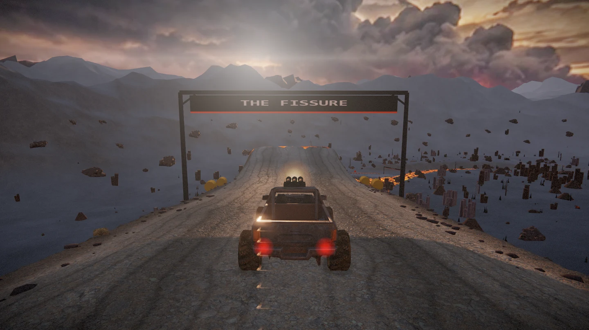
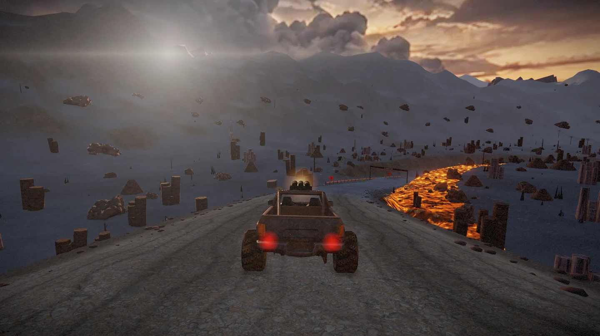
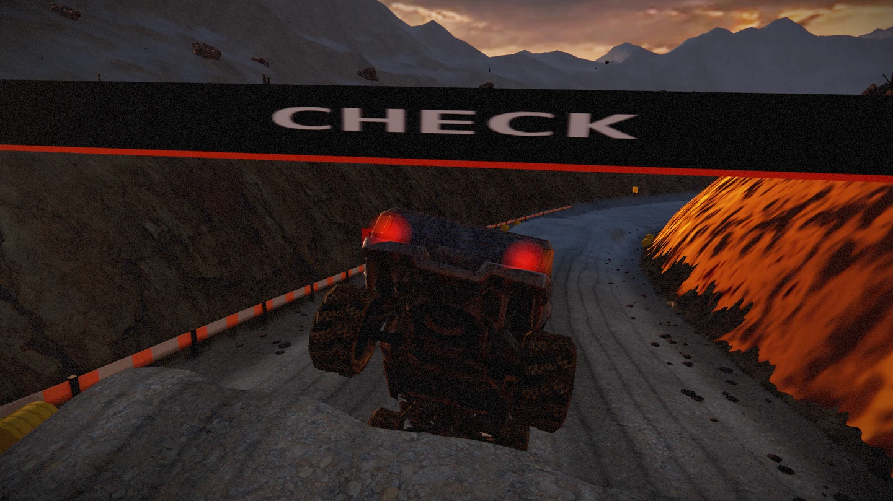
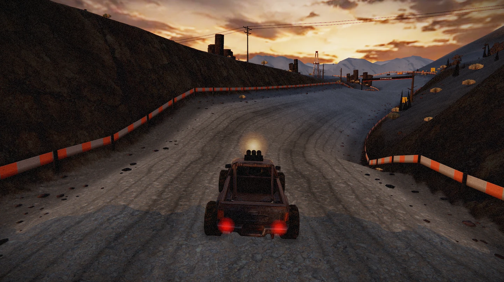
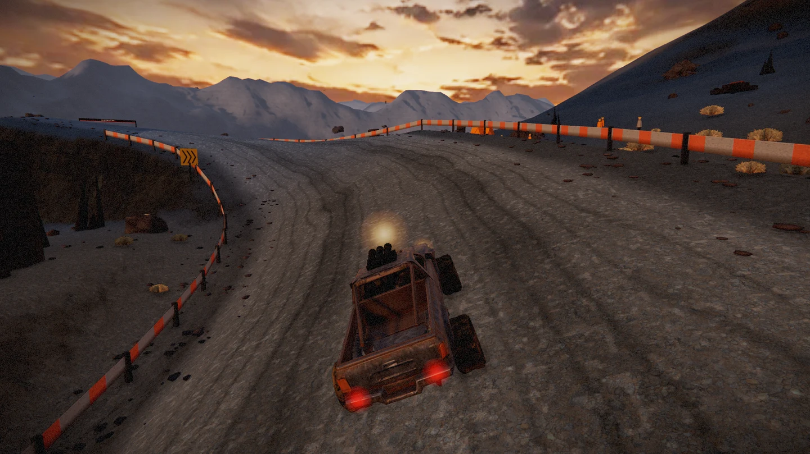
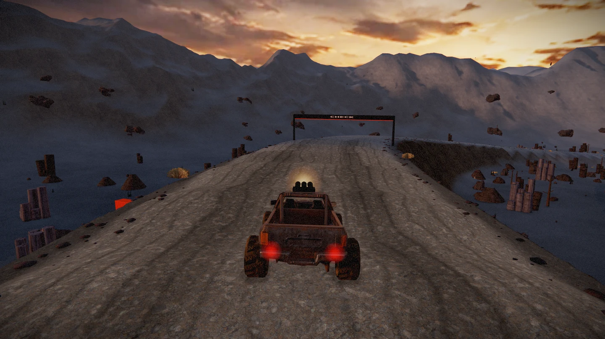
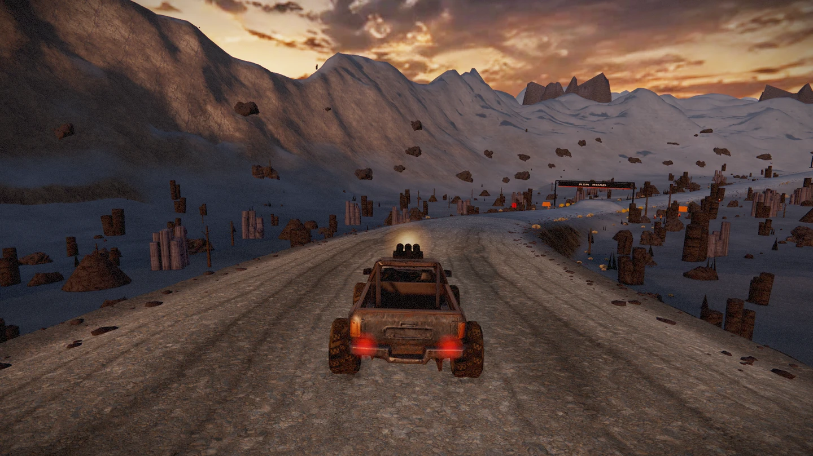
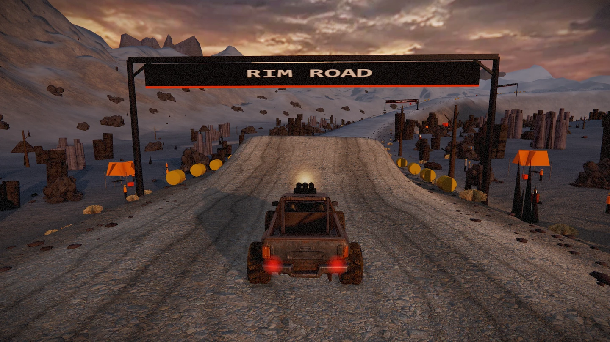
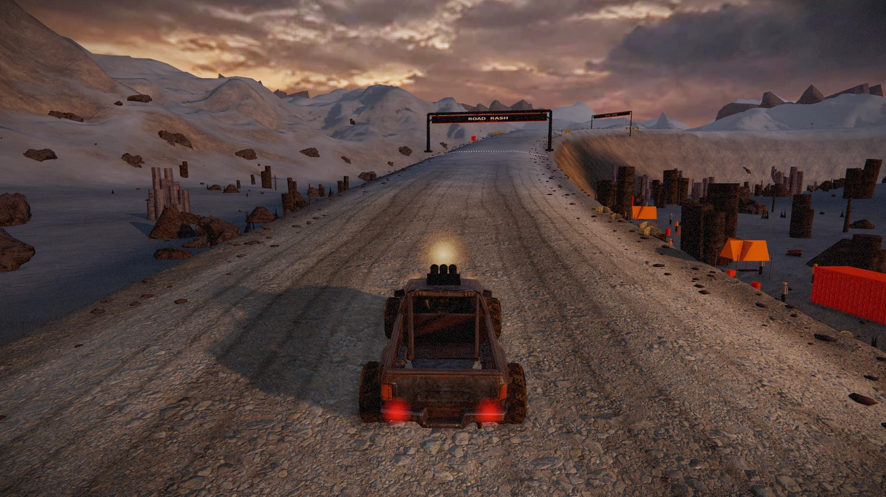